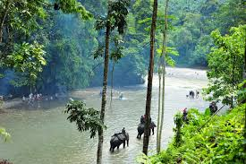

Keindahan Tangkahan
Tangkahan, sering disebut 'surga tersembunyi' Sumatera Utara, adalah destinasi yang memikat dengan keindahan alam yang menakjubkan. Terletak di tengah hutan tropis yang lebat dan perawan, Tangkahan menawarkan pemandangan yang luar biasa serta sungai-sungai jernih yang mengalir di antara pepohonan hijau. Di sini, Anda dapat merasakan pengalaman luar biasa berinteraksi dengan gajah Sumatera dalam habitat alami mereka, berkat program konservasi yang mendukung pelestarian satwa langka ini. Dengan kombinasi keindahan alam yang mempesona dan kesempatan untuk bertualang dengan gajah, Tangkahan adalah tempat ideal untuk melarikan diri dari rutinitas dan menikmati petualangan yang menyegarkan.
